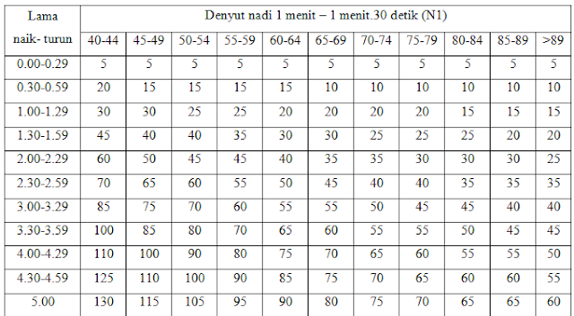

Welcome to 2

situs agen judi online sbobet bola casino indonesi Home My Blog situs agen judi online sbobet bola casino indonesi Home My Blog Home My Blog Permainan Table Games Casino Online Adalah yang Paling Populer
Permainan Table Games Casino Online Adalah yang Paling Populer
01 Jul
Di dalam casino, Anda akan menemukan berbagai macam judul permainan yang menarik dengan tingkat kesulitan yang berbeda. Namun bagi para bettor, diantara banyaknya judul jenis permainan casino online, salah satu yang paling populer adalah permainan meja atau yang lebih dikenal dengan table games. Ini merupakan sebuah istilah yang digunakan untuk membedakan permainan keberuntungan atau probabilitas dengan sistem permainan live dealer.
Table Games Casino Online Selalu Menjadi Permainan yang Terkenal di Seluruh Dunia
Semua permainan judi casino online itu menarik apalagi permainan meja. Ini merupakan permainan judi yang sangat terkenal dan populer karena pengertian yang paling mudah adalah permainan ini dimainkan di meja dengan live dealer yang asli. Beberapa jenis permainannya sangat banyak mulai dari Baccarat, Roulette, Craps, Blackjack, poker dan sebagainya. Ini beda dengan permainan yang sifatnya dimainkan dengan menggunakan mesin layaknya slot. Meskipun slot dimainkan dengan mesin, namun ini tetap casino.
Permainan ini sangat terkenal karena banyak bettor yang selalu berusaha untuk memainkannya. Permainan ini jauh lebih menantang dibandingkan dengan permainan yang dimainkan dengan mesin yang seringkali hanya berbekal keberuntungan murni bahkan sangat sulit untuk dimenangkan beruntun. Baik dimainkan dengan menggunakan sistem online maupun juga dimainkan di dalam casino konvensional, permainan meja tetap menjadi salah satu yang paling terkenal dan populer di kalangan para bettor judi poker terpercaya .
Permainan seperti ini seringkali dianggap tidak akan memberikan kerugian yang sangat banyak sama sekali karena bukan seperti permainan judi keberuntungan yang mana bettor harus mempertaruhkan lebih banyak uang terus menerus. Ini merupakan sebuah hal yang sebaiknya cocok dimainkan oleh para pemula yang tidak ingin merasa mengeluarkan uang dengan nominal yang besar untuk sesuatu yang belum tentu akan membuat mereka berhasil menang. Bahkan para profesional sangat menyukai permainan ini.
Seperti yang dikatakan sebelumnya, permainan ini memiliki banyak sekali tantangan di dalamnya dan itulah yang paling disukai oleh para bettor pemula. Mereka justru merasa kurang suka dengan permainan judi yang biasa atau bahkan juga cepat dimainkan. Mereka hanya senang dengan permainan yang bukan hanya memberikan keuntungan namun mampu memacu adrenalin mereka sebagai seorang bettor. Itu hanya bisa diperoleh di dalam permainan judi casino yaitu table games.
Selain itu, bettor senang dengan table games karena mereka bisa bermain dengan para bettor yang lainnya sehingga bukan hanya akan fokus pada diri mereka dan permainannya saja. Mereka bisa fokus dengan berbagai macam hal pula dan menyenangkan. Bettor bisa berjuang untuk memenangkan casino online dengan para pemain yang lain dan itu merupakan hal yang paling menarik. Itulah mengapa permainan ini selalu ramai dibandingkan dengan permainan judi yang lainnya dan tetap ada meskipun bukan permainan yang baru melainkan permainan judi yang tradisional.
Tips Pemula Memainkan Casino Online Untuk Kali Pertama
Banyak sekali orang yang selalu beranggapan bahwa permainan judi poker online merupakan salah satu judi yang sulit dan ini merupakan permainan yang paling cocok untuk bettor yang profesional dibandingkan dengan bettor pemula. Casino online merupakan permainan yang sangat menantang namun tetap saja tidak bisa dilakukan dengan mudah. Bagi para pemula, dibutuhkan lebih dari sekedar keberuntungan namun mereka tetap akan memperoleh untung bila menang.
Bagaimana Tips Para Pemula Memainkan Casino Online Untuk Pertama Kalinya
Bagaimana seorang pemula sanggup untuk berhasil memenangkan permainan judi casino online? Banyak dari mereka yang tidak pernah merasa bisa langsung memenangkan permainan begitu mereka memulainya. Para bettor seringkali beranggapan bahwa mereka harus memainkan judi yang lebih mudah tanpa adanya tantangan yang bisa membuat mereka kehilangan uang dengan sangat cepat. Namun setidaknya bettor harus bisa mencoba bermain judi casino ini karena akan memberikan keuntungan.
Bila Anda berhasil untuk memperoleh keuntungan, maka hasilnya pun juga besar sebab casino memiliki odds yang tinggi untuk sebagian permainan yang dimainkan dengan menggunakan sistem judi strategi. Odds yang besar menjadi incaran bettor namun Anda yang masih pemula, jangan berpandang pada odds saja karena tantangannya besar dan tidak bisa dimenangkan hanya dengan taruhan yang besar pula. Inilah tips yang terbaik untuk para pemula dalam casino antara lain:
Jangan bergonta-ganti permainan
Ketika Anda telah memutuskan untuk memainkan judi casino tertentu, maka jangan begitu mudahnya untuk berganti. Sebaiknya Anda tidak sering bergonta-ganti permainan karena ini tidak akan memunculkan dan juga meningkatkan kemampuan Anda. Mungkin ketika mencoba permainan tersebut, Anda tidak bisa langsung menang namun bukan itu permasalahannya. Bettor masih belum mengetahui seperti apa kemampuan mereka hanya dengan memainkannya sekali saja. Bettor harus memainkannya berkali-kali dulu untuk benar- benar mengetahui apakah mereka cocok dengan permainan judi tersebut atau tidak sama sekali. Jika bettor akhirnya bisa menemukan kemenangan, maka disinilah mereka akan menemukan kecocokkan. Jika hanya bermain sekali, tidak mungkin bettor idn poker terpercaya bisa langsung memutuskan bahwa permainan itu adalah yang terbaik. Sudah pasti dibutuhkan lebih dari sekali. Karenanya jangan mudah dan cepat bergonta-ganti saja karena bettor harus tahu seperti apa yang karakteristik permainan yang mereka mainkan.
Jangan cepat menyerah
Bettor pemula seringkali cepat menyerah begitu mereka bermain judi. Hanya karena mereka langsung mengalami kekalahan ketika bermain pertama kali, mereka sudah langsung menyerah dan mengatakan bahwa permainan judi tidak cocok untuk mereka. Hal ini bukan merupakan hal yang baik karena seperti yang dikatakan sebelumnya, kemampuan bettor sesungguhnya masih belum terlihat dengan baik hanya dengan sekali bermain. Dibutuhkan berkali-kali percobaan hingga akhirnya usaha Anda tidak akan memberikan hasil buruk.
Ketika sudah menang, maka Anda pun akan senang dan berpikir bahwa permainan itu adalah judi yang sangat baik dan menguntungkan bagi mereka. Bettor sama sekali tidak akan pernah lagi merasa terintimidasi dan menyerah dalam casino poker online.
Cara Menang Casino Online Dengan Ketekunan
Bukan hanya dibutuhkan kemampuan untuk dapat memenangkan casino melainkan dibutuhkan pula yang namanya ketekunan karena ini akan membuat bettor justru akan lebih konsisten dalam memenangkan permainan tersebut. Jika bettor tidak tekun bermain casino online, mereka sama sekali tidak akan pernah menang meskipun memiliki kemampuan yang luar biasa dalam permainan tersebut sebab orang cerdas biasanya kalah dari orang yang tekun.
Ketekunan Akan Membuat Bettor Berhasil Menang
Meskipun sifatnya judi adalah game online yang menyenangkan dan membuat bettor bisa menghibur diri mereka sendiri, akan tetapi bettor harus bisa tetap konsisten menang. Ini selayaknya seperti Anda sedang belajar dan ingin menguasai matematika. Hanya orang tekun yang dapat berhasil untuk menghitung dan mengkombinasikan semua angka di dalamnya dengan tepat. Meskipun Anda memiliki kemampuan yang handal di dalam matematika, namun pelajaran ini bukan hanya satu sumber saja.
Matematika selalu memiliki hitungan yang bahkan bisa berkembang di kehidupan sehari-hari dan judi pun sama. Meskipun metode memainkan casino online sama sekali tidak memiliki perbedaan yang mencolok apapun, tetap saja bettor tidak akan bisa selalu memenangkannya. Pasti dari kemenangan yang mereka dapatkan, kekalahan jauh lebih mengintai. Karena itulah, bettor harus selalu belajar dan tekun memainkannya sehingga kemampuan itu tidak akan cepat hilang dari semua pikiran dan otak Anda.
Sekali saja Anda skip bermain diluar jadwal yang sudah Anda buat, maka ketika Anda memainkannya lagi, tentu saja Anda bisa memperoleh kesulitan dan akhirnya tidak bisa memenangkannya. Jangan sombong dan berpikir bahwa tidak akan ada bettor lain yang bisa memenangkan permainan ini karena sesungguhnya, bettor judi yang lainnya akan selalu berkembang dengan baik dan mereka akan selalu belajar untuk memperbaiki kemampuan yang dimiliki. Untuk itulah, bettor tidak akan pernah bisa sukses dan menang dengan mudah.
Namun bettor yang tidak tekun akan kalah dengan mereka yang berkembang. Bahkan jika Anda dulu pernah menang dari bettor yang sama, ketika Anda bermain lagi, belum tentu Anda bisa langsung menang lagi. Belum tentu hal yang sama akan terulang kembali dan ini merupakan sesuatu yang tidak boleh Anda lakukan sedikitpun, Sebaiknya bettor mencoba untuk terus mengasah kemampuan mereka sehingga cukup memiliki strategi untuk memenangkan permainan judi yang sama dan telah Anda pilih sebelumnya sebagai permainan pamungkas.
Bettor sebaiknya harus berhasil menemukan trik baru sehingga jika mereka berhadapan lagi dengan bettor yang sama, maka mereka pun bisa sukses dan juga meraih keuntungan itu. Bila bettor hanya fokus dan sudah merasa cukup puas dengan kemampuan yang sama terus, maka mereka pun tidak akan pernah bisa sukses menang dan bettor harus siap apabila mereka harus dikalahkan oleh orang lain yang selalu belajar bermain situs poker online sejak awal hingga akhir dengan baik tanpa kesulitan sama sekali karena selalu berlatih.
